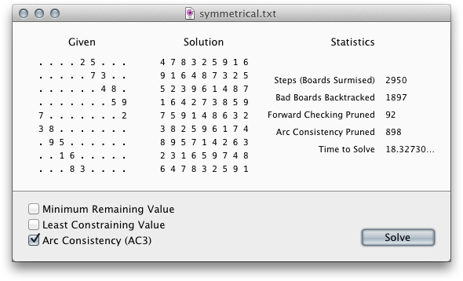

With privacy online in such a dismal state, I designed and built a new web browser that cuts down significantly on the ability of other sites to track you after you leave their pages.
The problem, with the major browsers currently available, is that they have a single notion of you as an individual, with all the cookies that comprise your online identity stored in a single pool. Brows Personæ separates your identity into different “personæ” that you use to browse the internet. By doing so, even though advertising firms can still track you, they see you as a multitude of different people, impeding their broader line of tracking.
Brows Personæ can also be used to sign in to the same website under multiple accounts, at the same time, just as if you were using multiple computers.
You can read all about it in the final report. And you can download it or browse the code ➔

My sudoku solver was originally an assignment for the Artificial Intelligence class. I built it as a command-line Python tool (in order to learn the language).
The program employs a number of classic AI state-search techniques, including Forward checking, Minimum remaining value, Least constraining value, and Arc consistency. Any combination of these techniques can be turned on, to compare performance. It’s arranged modularly, with different functions loaded based on the chosen techniques.
This project goes above and beyond the requirements of the assignment, in both its capabilities and engineering, as a command-line tool. I also wrote a Mac wrapper application in Cocoa to make it easier to use.
The Tech Dump was a web application designed to help keep track of technologies in a rigorous, relational, consistent way. It was a team project I worked on with Dan Barton for a Databases course.
We decided to use Rails, and I learned the Rails platform in the process of developing the app. Dan was uncomfortable learning Ruby, however, so he wrote the database wrapper code in Java. We deployed the app (albeit temporarily) in JRuby, to allow for this.
The app was designed as a publicly-collaborative site, with anybody able to contribute information about literally any technology. The advantage of arranging this in a rigorous database, rather than free-form (as you see on Wikipedia), is that related technologies, parent technologies, and usages of technologies can be connected in a consistent and readily-searchable way. For instance, we developed a thoroughly abstract system of properties that can be defined for a technology, which get inherited from parent technologies and make technologies directly comparable with other related ones (see fig. “A Technology Detail page,” bottom row).
This project demonstrates
Its full title, Matherator Extreme (Pretty Princess Edition), like the rest of the project, was a group effort involving me, Tanner Floisand, George Hanley, and Taz Chapman. For the Software Engineering class, our assignment was to develop an application that elementary schools could use to help students reïnforce their basic arithmetic skills. We decided to make a few simple, fun games that could be fun in a non-math-related way.
This was a very large, complex project with three separate components (a student component, a teacher admin panel, and a server process to mediate the two) and four games. It was done in Java (Swing for the UI). Coördinating the work between the four of us was a hit-the-ground-running experience of learning Git best practices.
The project demonstrates
TISCaP, or “TISCaP Is Simplicated Chat Protocol,” is a client/server protocol for simple, immediate, text-based chat sessions. It was developed as a group in a Networks class, and is a hybrid protocol that allows fairly easy parsing for both computers and humans.
While the protocol was a group effort, each of us created both a client and server implementation of the protocol. My server is a simple JRuby program that dispatches messages through a blocking queue. My client is a fairly decent-looking Mac app. I have verified that the server works with others’ clients, and that the client works with others’ servers.
The project demonstrates
As part of my duties setting up and administering the Computer Science department’s Linux server, Cerberus, I devised a simple system for displaying a randomized, witty message when students log in to use the server. It consists of a program that participates in Linux’s update-motd system (”motd” meaning “message-of-the-day”). It reads in possible messages from a YAML file that administrators have access to. If there’s an urgent message scheduled for the current time, it’s displayed beneath the legendary Cerberus ASCII drawing; otherwise, one of the witty “protips” is displayed instead.
This was not done for a class or credit—it’s a labor of love.
The project demonstrates
Browse the code here or at /etc/update-motd.d/99-witty on Cerberus.